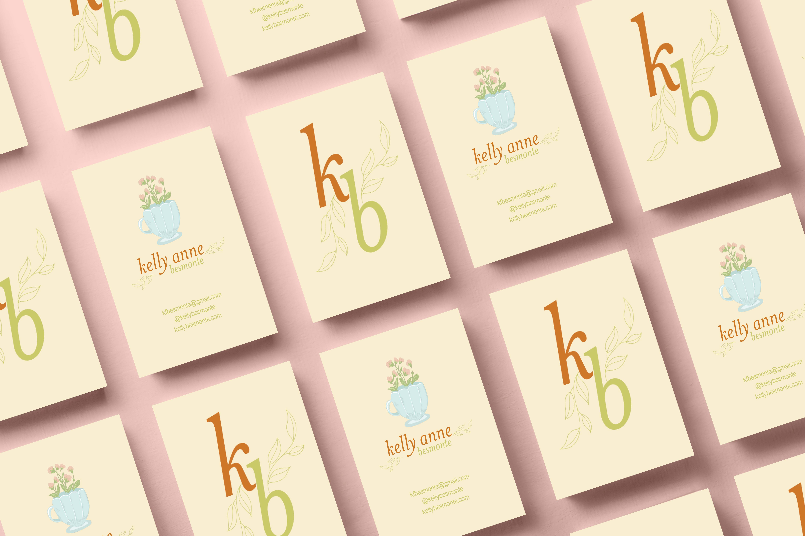
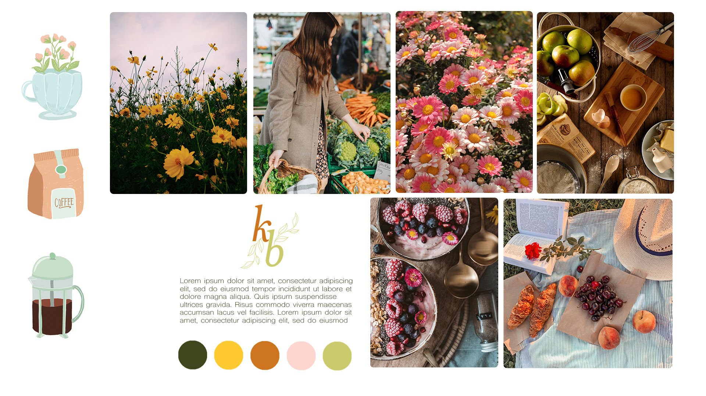
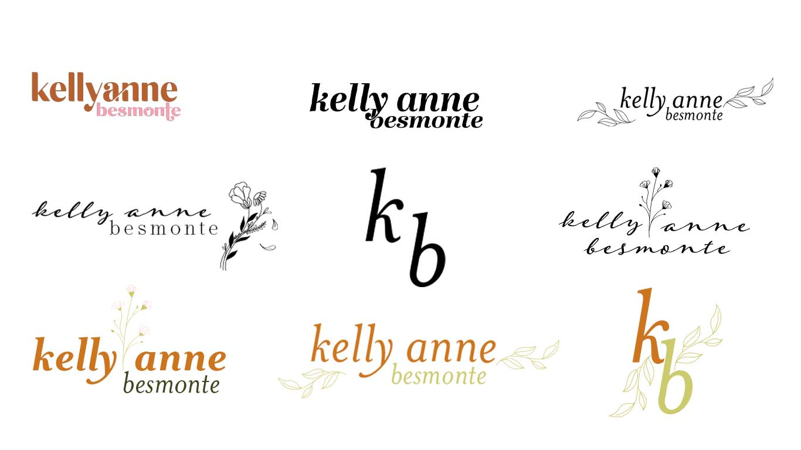
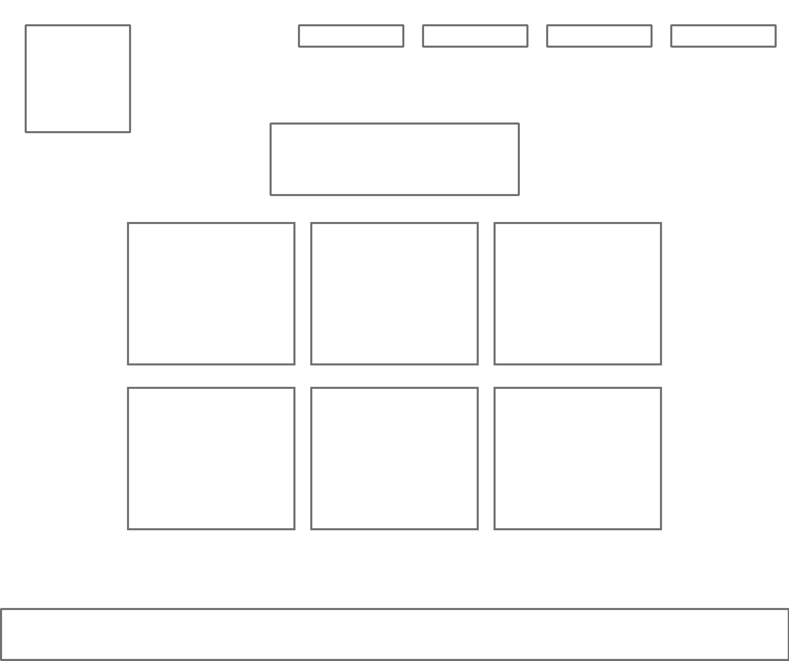
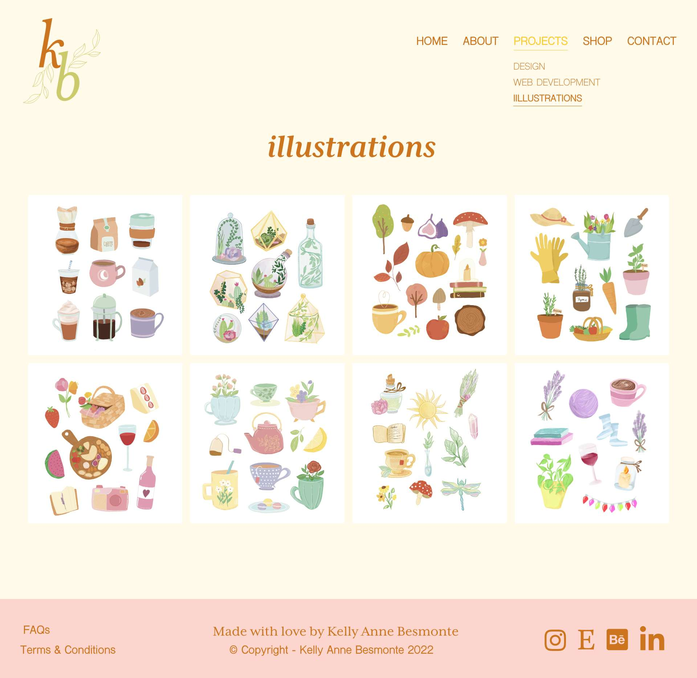

self-branding & design
In April of 2022, I was accepted into U for Change’s Graphic Design & Web Development course. For the design portion of the course, I was tasked to create a mood board, logo, and high-fidelity wireframe. Ready further for my process, design inspiration, and more!
The focus:
Brand Identity
Logo Creation
Ux Design
Tools:
Adobe Photoshop
Adobe Illustrator
Adobe XD
Procreate

brainstorming & mood board
The main purpose of this mood board was to capture the essence of what I wanted my brand to look and feel. To aid in my design process, I chose the key word “cottage core” as inspiration. “Cottage core” was a term popularized on Tik Tok during the pandemic and describes a visual aesthetic incorporating florals, picnics, long dresses, rural living, baking, and etc. It is a concept that I personally love and wanted to incorporate into my own brand as it directly opposes “hustle” culture and capitalism. It speaks to a simpler and more intentional way of living, which I wanted my brand to embody. In choosing the specific images above, I was also keeping my ideal client in mind which included: not-for-profit organizations, lifestyle and wellness brands, micro influencers, restaurants, and other small businesses.
Keywords:
"Cottage-core"
Floral
Rustic
Slow living
Tools:
Adobe Photoshop
Adobe Illustrator

the logo
Prior to U for Change, I had already made a logo using a font I purchased on Creative Market. It was an easy solution for someone who wasn’t familiar with Adobe Illustrator, but ultimately, was not unique. I knew I wanted to challenge myself in creating a logo with a font already included in the Adobe Creative Suite subscription. Before starting, I kept in mind that I wanted a logo that was timeless, even twenty years down the road. I experimented with different fonts and natural elements that could convey a floral aesthetic. The logo I ended up choosing were my initials and the leaves curving around the letters. I was certain I would choose a logo with my full name, but I realize my name is quite long. I have already experienced in the past with my previous logo how difficult it can be to fit my full name onto a business card, while still keeping it legible. Ultimately, I chose this logo because of its simplicity and it’s timelessness. It truly best represents who I am as an illustrator and designer.
Tools:
Adobe Illustrator
Fonts:
Mrs Eaves XL Serif OT
Shree Devanagari 714

low-fidelity wireframes
The next time for the Design portion of U for Change’s Graphic Design & Web Development program was to create a low-fidelity wireframe. I approached this part by using basic shapes to outline thy basic structure of my site. For example, the photo above, is how I initially envisioned my illustration page to appear.
Tools:
Adobe Illustrator
Fonts:
Mrs Eaves XL Serif OT
Shree Devanagari 714

high-fidelity wireframes
Above is the high-fidelity wireframe for the exact illustration page. For this portion, I focused on putting as much detail into the high-fidelity wireframe from structure, placement, colour, text, and user experience. As my site had multiple subpages, I wanted to make sure the prototype was easy to navigate. For example, in this illustration page wireframe, I made sure to highlight that it was a subpage of “Projects” so that I could remember to use a drop-down menu during the web development portion. This was the blue-print for my site, so having all the necessary information was crucial for the user experience and my own personal knowledge.
Tools:
Adobe Illustrator
Fonts:
Mrs Eaves XL Serif OT
Shree Devanagari 714